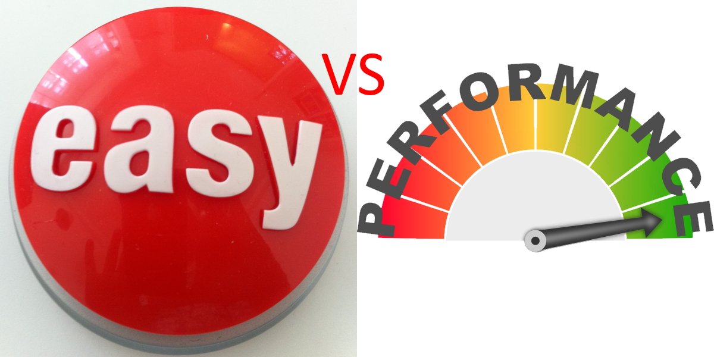

Ease of Creation VS Performance
Title description, April 7, 2019
It's a question that project managers often ask themselves. "Should it be easier for the developer to develope or better for the user to use?" On one hand, the project needs to be completed on time and within budget. On the other hand, the customer expects the highest quality product. It's all about finding that sweet spot.

BLOG ENTRY
Title description, April 2, 2014
Mauris neque quam, fermentum ut nisl vitae, convallis maximus nisl. Sed mattis nunc id lorem euismod placerat. Vivamus porttitor magna enim, ac accumsan tortor cursus at. Phasellus sed ultricies mi non congue ullam corper. Praesent tincidunt sed tellus ut rutrum. Sed vitae justo condimentum, porta lectus vitae, ultricies congue gravida diam non fringilla.